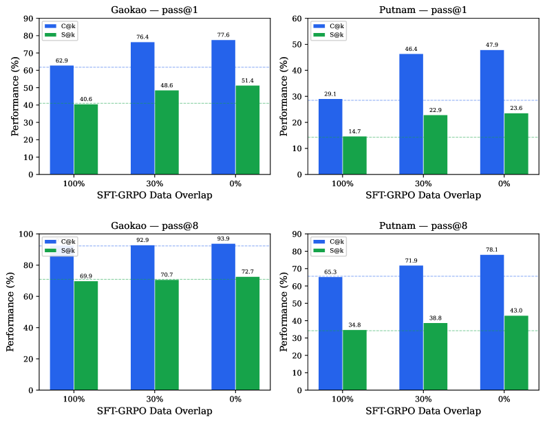

Ablates SFT-GRPO data overlap for a Lean 4 autoformalization model.
Abstract
Supervised fine-tuning (SFT) followed by Group Relative Policy Optimization (GRPO) is a common post-training recipe. We conduct a controlled ablation over SFT-GRPO data overlap, evaluating Qwen3-8B (thinking disabled) post-trained for Lean 4 autoformalization under six conditions that differ solely in training recipe: a base model, SFT-only, GRPO-only, and three SFT+GRPO configurations where 0 percent, 30 percent, or 100 percent of the GRPO prompts coincide with the SFT corpus. Keeping SFT and GRPO data disjoint consistently outperforms full overlap at zero additional compute cost. Evaluating on Gaokao-Formal and PutnamBench under both compile pass at k and semantic pass at k assessed by an LLM judge, we find that lower overlap is monotonically associated with higher compilation and semantic accuracy. At 0 percent overlap, GRPO yields a 10.4 percentage point semantic gain over SFT alone on Gaokao, while at 100 percent overlap both metrics remain flat, rendering the GRPO stage effectively redundant. We further show that dual-metric evaluation reveals compile semantic gaps exceeding 30 percentage points for the highest compiling models, a disparity invisible under compile-only benchmarking. To our knowledge, this is the first controlled investigation of SFT-GRPO data overlap as a post-training hyperparameter, demonstrating how model behavior varies based on the degree of data sharing between training stages.
Problem
Supervised fine-tuning (SFT) followed by Group Relative Policy Optimization (GRPO) is a standard post-training recipe for LLMs, but the effect of data overlap between SFT and GRPO stages on downstream performance has not been systematically studied.
Approach
The authors conduct a controlled ablation over SFT-GRPO data overlap for Lean 4 autoformalization, evaluating Qwen3-8B under six conditions differing solely in training recipe: base model, SFT-only, GRPO-only, and three SFT+GRPO configurations where 0%, 30%, or 100% of GRPO prompts coincide with the SFT corpus. Training data comprises 20,000 samples from NuminaMath, Leanabell, HERALD, and Lean Workbook. Evaluation uses both compile pass@k and semantic pass@k (assessed by an LLM judge) on Gaokao-Formal and PutnamBench.

Figure 6 : Compile and semantic pass@ k as a function of SFT-GRPO data overlap. Top: pass@1. Bottom: pass@8. Dashed lines indicate SFT baselines.
Results
At 0% overlap, GRPO yields a 10.4 percentage point semantic gain over SFT alone on Gaokao. At 100% overlap both metrics remain flat, making the GRPO stage redundant. Lower overlap is monotonically associated with higher compilation and semantic accuracy. The best configuration (SFT+GRPO-0%) achieves 77.6% compile@1 and 51.4% semantic@1 on Gaokao-Formal. Dual-metric evaluation reveals compile-semantic gaps exceeding 30 percentage points, invisible under compile-only benchmarking.